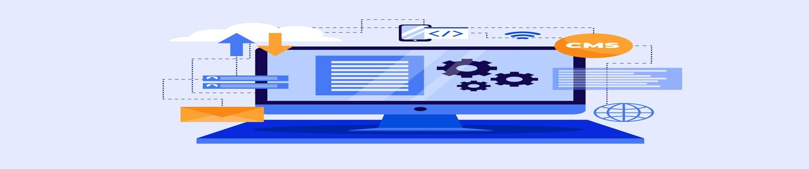

Nuestro mundo y su futuro
La informática es el motor de nuestro presente y futuro. Gracias a ella usamos celulares, computadoras e internet. Pero… ¿qué es y por qué es tan importante? Aquí lo descubrirás.

Descubre lo tan grande que es el mundo de la informatica mediante sus ramas
.png)
Admin. Base de Datos
Es la disciplina que se encarga de gestionar, mantener y asegurar la integridad, disponibilidad y seguridad de las bases de datos.
Ciberseguridad
Es la práctica de proteger sistemas, redes, dispositivos y datos de ataques digitales maliciosos y amenazas cibernéticas.
.png)
Inteligencia Artificial
Es el campo que desarrolla sistemas y máquinas capaces de imitar los comportamientos humanos
.png)
Infraestructura de Tecnología de la Información
Son los componentes de hardware, software y red que las empresas confían para gestionar y ejecutar sus entornos de TI eficazmente.
.png)
Robotica
Es una interdisciplina que se enfoca en el diseño, la creación, la programación y la operación de robots.
.png)
Soporte Tecnico
Asiste a los usuarios, para resolver problemas técnicos con hardware, software y redes, y mantener una organización o usuario individual.